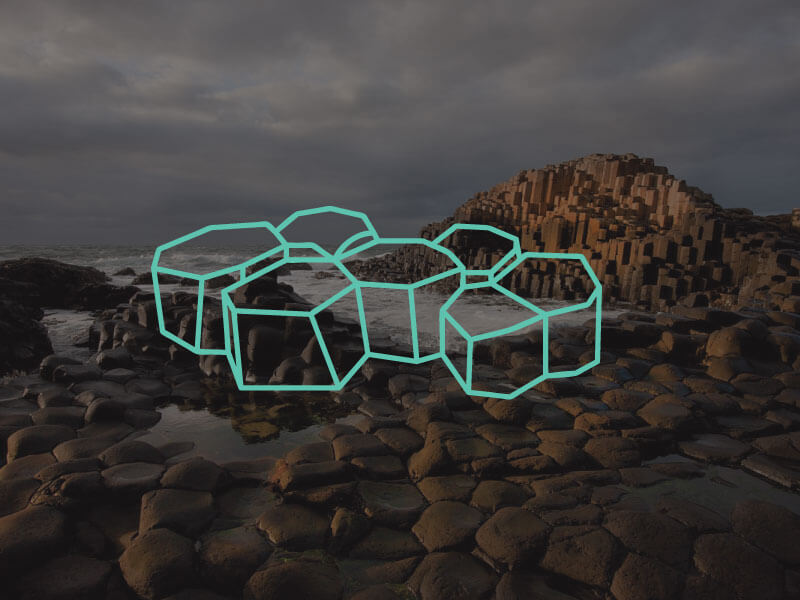

Giant’s Causeway
The Giant’s Causeway is an area of about 40,000 interlocking basalt columns, the result of an ancient volcanic eruption.
It is located in County Antrim on the northeast coast of Northern Ireland. It was declared a national nature reserve in 1987 by the Department of the Environment for Northern Ireland. In a 2005 poll of Radio Times readers, the Giant’s Causeway was named as the fourth greatest natural wonder in the United Kingdom. The tops of the columns form stepping stones that lead from the cliff foot and disappear under the sea. Most of the columns are hexagonal, although there are also some with four, five, seven or eight sides. The tallest are about 39ft high, and the solidified lava in the cliffs is 92ft thick in places.
In 1986, the Giant›s Causeway became a UNESCO World Heritage Site.